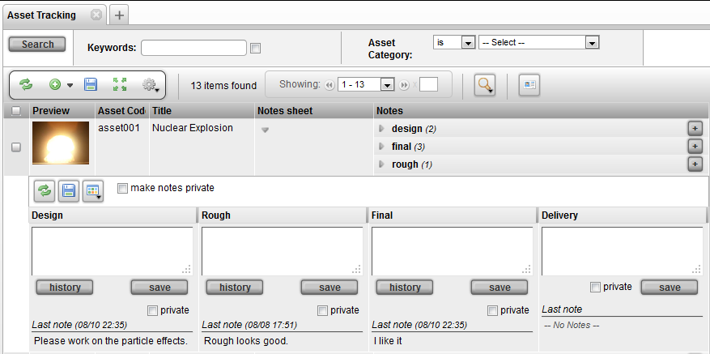
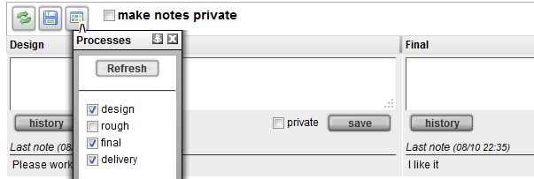

The Note Sheet widget provides a convenient layout for typing in notes for different processes in one concise user interface. The Note Sheet is also built to provide rapid interface for entering notes. For example, the Note Sheet helps in daily review sessions where the ability to enter notes in rapid succession is necessary.

Notes can be entered for any item. When the Note Sheet widget is added as a column, by default, the pipeline processes are used as the processes for note entry. The processes for the example item shown in the screen shot above include design, final, rough and delivery. The Notes Sheet widget allows entering of many notes in different processes and different parents at the same time. They can be saved either individually or altogether. The private check box option make a note private.
When the Note Sheet is expanded, it may require that the processes be selected to display. At the top of the widget is a button which allows you to load a process selection pop-up which exposes the desired processes.

After you are finished with note entry, you will two buttons appearing on the top right corner. Clicking on "save" will save all of the notes. If you have the Note Sheet Widget opened for vehicle001, vehicle002, and vehicle003, clicking on the standard save all will save all new notes in the view. To save one note at a time, there is also an individual "save" button for each process.
Clicking on the history button pops up a window which displays all the note entries under this particular context.
Private Notes
The private check box turns a note access to private if checked. The private option is a built in access rule which can deny a group of users from being able to see notes flagged as 'private'.
Note - When using the Note Sheet on items such as Tasks, Notes and Snapshots, the default assumption will be to add a note to the parent item for the particular process. For example, if adding a note to the "design" task, a note will be added with the same process.